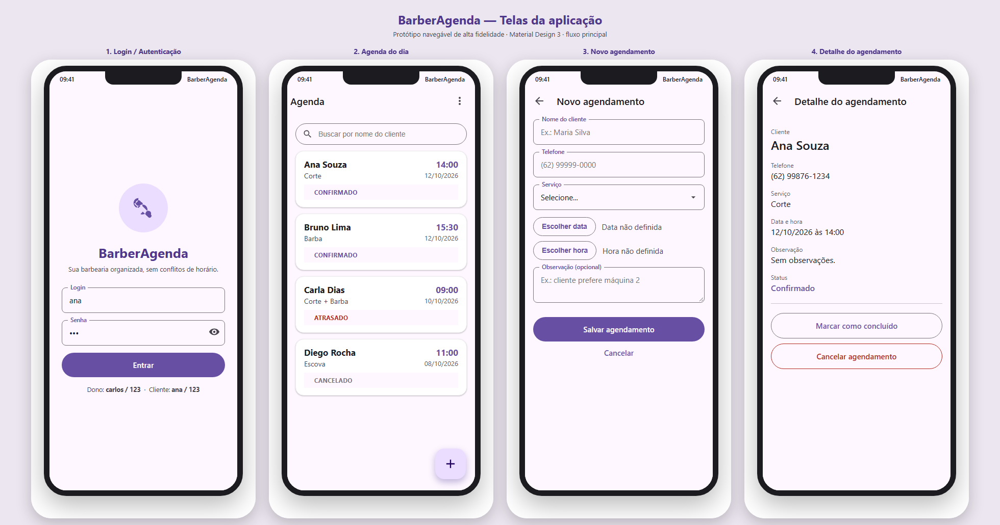

PONTIFÍCIA UNIVERSIDADE CATÓLICA DE GOIÁS
Escola Politécnica e de Artes
Curso Superior de Tecnologia em Análise e Desenvolvimento de Sistemas
Memorial Descritivo
Protótipo de Interfaces — Usabilidade e Acessibilidade
Aplicação móvel BarberAgenda — Projeto Integrador 2026/2
| Projeto | BarberAgenda — agendamento de serviços em barbearia |
| Etapa | N1 — primeiro bimestre |
| Artefato | Protótipo navegável das interfaces, com justificativa das decisões de usabilidade e acessibilidade (item 3 da N1) |
| Formato do protótipo | Projeto navegável em HTML (alta fidelidade), no arquivo docs/prototipo/barberagenda-prototipo.html |
| Equipe | (preencher) — coordenador e integrantes com atribuições |
| Data | ___/___/______ |
Este documento descreve e justifica as decisões de usabilidade e acessibilidade adotadas no protótipo navegável do BarberAgenda. O protótipo é clicável e cobre o fluxo principal do usuário: autenticação, consulta da agenda, criação de agendamento e gestão (cancelar/concluir).

Figura 1 — Telas do protótipo: (1) Login, (2) Agenda, (3) Novo agendamento e (4) Detalhe do agendamento.
| Tela | Objetivo | Componentes principais |
|---|---|---|
| 1. Login | Autenticar o usuário e definir o perfil (dono/cliente). | ImageView (logo), 2 TextInputLayout OutlinedBox, MaterialButton, texto de ajuda com credenciais. |
| 2. Agenda | Listar os agendamentos e permitir busca por cliente. | RecyclerView de MaterialCardView, campo de busca, FloatingActionButton, menu “Sair”, estado de lista vazia. |
| 3. Novo agendamento | Registrar um atendimento com validação e seleção de data/hora. | TextInputLayout (cliente, telefone, serviço por dropdown, observação), MaterialDatePicker, MaterialTimePicker, MaterialButton. |
| 4. Detalhe | Exibir todos os dados e permitir concluir ou cancelar. | Rótulos/valores tipográficos, MaterialButton (outlined) e diálogo de confirmação (MaterialAlertDialogBuilder). |
| Componente | Onde é usado | Motivo |
|---|---|---|
| TextInputLayout (OutlinedBox) | Login, cadastro e busca | Rótulo flutuante, exibição de erro junto ao campo e maior clareza de preenchimento. |
| MaterialButton | Todas as telas | Botões de ações primárias (preenchido), secundárias (contornado) e terciárias (texto), com áreas de toque amplas. |
| MaterialCardView | Itens da agenda | Agrupa as informações de cada agendamento com elevação e cantos arredondados, reforçando que o item é clicável. |
| FloatingActionButton | Agenda | Ação principal destacada (“novo agendamento”) sempre acessível com o dedo. |
| MaterialDatePicker / MaterialTimePicker | Cadastro | Seleção guiada de data e hora, eliminando erros de digitação e formatação. |
| MaterialAlertDialogBuilder | Confirmação de cancelamento | Prevenção de ação destrutiva acidental. |
| Snackbar / Toast | Feedback de sucesso/erro | Retorno imediato e discreto após as operações. |
As decisões seguem as heurísticas de usabilidade de Nielsen, adaptadas às diretrizes do Material Design 3:
| Heurística | Aplicação no protótipo |
|---|---|
| Visibilidade do estado do sistema | Status de cada agendamento em destaque e colorido (Confirmado, ATRASADO, Cancelado, Concluído); Snackbar confirma o resultado das ações; botões ficam desabilitados durante a operação. |
| Correspondência com o mundo real | Linguagem do domínio (“Corte”, “Barba”, “Escolher data”), datas em dd/mm/aaaa e horários no formato 24h. |
| Controle e liberdade do usuário | Botão “Cancelar” nas telas e “Voltar” na barra superior; o cancelamento de agendamento exige confirmação. |
| Consistência e padrões | Componentes nativos do Material 3; mesmos padrões de barra, campos e botões em todas as telas. |
| Prevenção de erros | Validação de campos antes de salvar; uso de seletores de data/hora em vez de digitação; bloqueio de horários em conflito e com menos de 1h de antecedência. |
| Reconhecimento em vez de memorização | Lista exibe cliente, serviço, hora e data; a tela de login traz dica das credenciais de teste. |
| Eficiência e flexibilidade | Busca por nome do cliente para localizar rapidamente um agendamento. |
| Estética e minimalismo | Hierarquia clara (título, informação primária, detalhes); sem elementos supérfluos. |
| Critério (R11) | Situação |
|---|---|
| Aderência às heurísticas de usabilidade | Atendido — ver Seção 4. |
| Contraste adequado | Atendido — color roles do Material 3 e status com texto + cor. |
| Áreas de toque compatíveis | Atendido — botões de largura total e ícones ≥ 44 dp. |
| Rótulos descritivos para leitores de tela | Atendido — contentDescription no FAB, itens da lista e logo. |
O protótipo cobre o fluxo principal de forma navegável e aplica os princípios de usabilidade e acessibilidade do Material Design 3. Como evolução, prevê-se testar as telas com ao menos 5 usuários do perfil (conforme o cronograma da N2) e incorporar os ajustes decorrentes, além de gerar capturas em dispositivo físico.